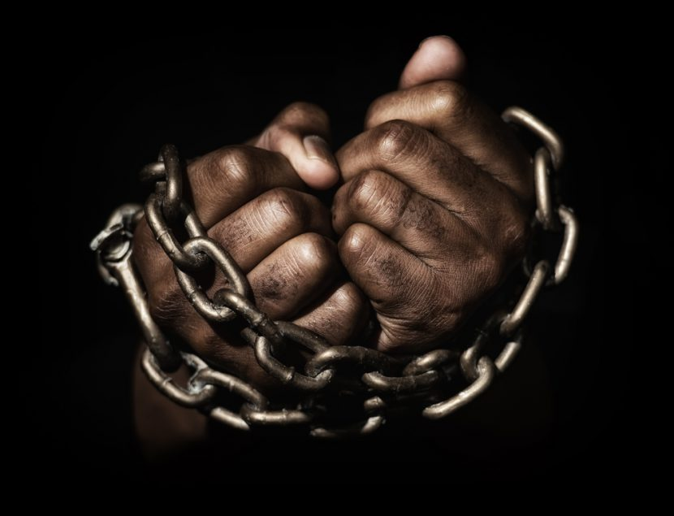

El poder es la capacidad de una persona o un grupo de hacer que algo ocurra. En su sentido político y social, se define como la capacidad de un individuo o un grupo de liderar, influenciar o dominar a otros, a veces mediante la fuerza, para que hagan ciertas cosas o se sometan a su voluntad. En este sentido, un padre puede ejercer el poder sobre sus hijos, y un gobierno sobre sus ciudadanos.El sociólogo alemán Max Weber (1864-1920) definió el poder como la “probabilidad de imponer la propia voluntad dentro de una relación social, aun contra toda resistencia y cualquiera sea el fundamento de esa probabilidad”. En las sociedades contemporáneas, la idea de poder está asociada también a la de autoridad. De hecho, se suele llamar “autoridades” a quienes ejercen funciones directivas o de mando en diversas instituciones, ya sean sociales, políticas, militares o empresariales. Sin embargo, Weber llamó autoridad al poder ejercido de forma legítima. Por eso, algunos autores consideran que el poder es toda capacidad de liderazgo, influencia o dominación, incluso si se basa exclusivamente en la violencia; mientras que la autoridad es la capacidad de influir en los demás a partir de la legitimidad (basada en la ley, la tradición o el carisma) y no de la fuerza. Muchas ciencias sociales se dedican al estudio del poder y de sus mecanismos o formas de ejercicio, tales como la sociología, las ciencias políticas y el derecho. Si bien cada una de estas disciplinas tiene sus propias herramientas de análisis, en ocasiones dialogan entre sí o comparten definiciones mediante perspectivas interdisciplinarias.El poder político es la capacidad de dirigir una sociedad desde las instituciones del Estado o de influir en las decisiones del gobierno a partir de la acción llevada a cabo desde partidos políticos u otros movimientos sociales que intervienen en el terreno político.A veces, el término “poder político” se usa como sinónimo de todo el personal político que participa en el Estado o en la lucha por acceder a él, que se alterna en el gobierno y que participa en el Parlamento (es decir, tanto el oficialismo como la oposición). En los países democráticos, se considera que el pueblo delega el poder en quienes administran el Estado, para que estos tomen las decisiones políticas en su nombre. El conjunto de las instituciones y autoridades del Estado recibe el nombre de “poder público”. Como tal, se organiza en tres poderes diferentes e independientes, según la tradición republicana, que son el Poder Ejecutivo, el Poder Legislativo y el Poder Judicial. Poder Ejecutivo En las democracias, el Poder Ejecutivo, también llamado gobierno, es encabezado por un jefe de Estado o un jefe de gobierno (generalmente, un presidente o primer ministro), elegido por el voto popular. Además, está integrado por su gabinete de ministros y por otros cargos, como los gobernadores y alcaldes. Este poder se ocupa de la conducción política y administrativa del Estado, es decir, de ejecutar las leyes y encargarse de la toma de decisiones respecto a cómo distribuir los recursos y qué medidas tomar en interés del Estado o de la sociedad. Poder Legislativo El Poder Legislativo reside en el Parlamento o la Asamblea Legislativa, dentro de la cual tienen representación los distintos partidos políticos de una nación, en diferentes proporciones de acuerdo a la cantidad de votos populares obtenidos. Este poder se ocupa de deliberar, redactar, promulgar y derogar las leyes, y de debatir y supervisar la administración de presupuestos o la aprobación de poderes especiales para el Poder Ejecutivo, entre otras funciones. Ejerce una forma de control o vigilancia que limita al Poder Ejecutivo mediante las leyes, y puede estar compuesto por una o dos cámaras (diputados y senadores). Poder Judicial El Poder Judicial se compone de una estructura jerárquica de tribunales y juzgados, a la cabeza de la cual está generalmente el Tribunal Supremo de Justicia. Sus miembros no son electos por sufragio, sino designados por mérito y mediante mecanismos en los que suelen participar los otros dos poderes. Este poder es el encargado de interpretar las leyes en el marco de la Constitución, y de ejercer las sanciones o reparaciones necesarias para garantizar la justicia y la paz social en la comunidad.La esclavitud es una situación jurídica en la que un individuo (el esclavo) es considerado propiedad de otro (el amo), y carece de libertad y de todo tipo de derechos sobre sí mismo. Un esclavo puede ser tratado como un objeto o una mercancía, pues se lo puede vender, comprar, intercambiar o donar, y en la medida en que es propiedad de un amo, este puede maltratarlo y castigarlo.La esclavitud existió en numerosos lugares y momentos de la historia. En algunos casos, fue la base de todo el sistema económico de una sociedad, lo que se conoce como esclavismo o, en terminología marxista, modo de producción esclavista. El esclavismo como sistema económico fue característico de Grecia y Roma en la Edad Antigua y de las plantaciones de algunas regiones de América durante la época colonial y los primeros años de la época independiente. La palabra esclavo proviene del latín medieval sclavus y este del griego bizantino sklabós. Ambos términos derivan de sloveninu, que era la manera en que se llamaban a sí mismos los pueblos de Europa del noreste, es decir, los pueblos eslavos (que fueron con frecuencia esclavizados durante la Edad Media). Anteriormente, los esclavos recibían nombres como doulos en la antigua Grecia o servus en Roma. La esclavitud se considera actualmente un acto ilegal e indigno, que violenta los derechos fundamentales e inalienables del ser humano, y por lo tanto es considerada un delito de lesa humanidad. Aunque fue abolida legalmente en la mayor parte del mundo en el siglo XIX, aún existen casos contemporáneos de esclavitud, que pueden pasar inadvertidos o cuyos perpetradores son perseguidos y condenados. Las disposiciones legales vigentes sobre la esclavitud figuran en la Convención sobre la Esclavitud de 1926, firmada en Ginebra, Suiza, por la Sociedad de Naciones, antecesora de la Organización de las Naciones Unidas (ONU). Por su parte, la Declaración Universal de los Derechos Humanos de la ONU, proclamada en 1948, establece que la esclavitud y la trata de esclavos están prohibidas en cualquiera de sus formas, y el Estatuto de Roma de 1998 incluye esta práctica entre los crímenes de lesa humanidad que son imprescriptibles. Cada 23 de agosto se celebra el Día Internacional del Recuerdo de la Trata de Esclavos y de su Abolición. La fecha proviene de la noche del 22 al 23 de agosto de 1791, cuando en la colonia francesa de Saint-Domingue (actual Haití) se produjo una sublevación de esclavos que dio inicio a la Revolución haitiana, que contribuyó al proceso de abolición de la trata transatlántica de esclavos.Los primeros indicios claros de la existencia de esclavos corresponden a las sociedades estatales de la Edad Antigua. Tanto las instituciones estatales como los potentados particulares podían disponer de sirvientes y esclavos. En algunos casos, como el antiguo Egipto y Mesopotamia, la esclavitud no era un aspecto central del sistema económico, en otros casos, como en las ciudades-Estado griegas y en la Antigua Roma, los esclavos fueron el sostén económico de la sociedad. Un modo habitual de esclavitud consistía en tomar prisioneros de guerra, especialmente entre las familias de los derrotados, y convertirlos en esclavos. También era común la esclavitud por deudas, es decir, el sometimiento de una persona a otra como un mecanismo de pago de una deuda que no podía saldar. En otros casos, los traficantes capturaban personas en regiones apartadas, generalmente pertenecientes a otras etnias, para venderlas como mano de obra esclava. Durante la época clásica grecorromana, los esclavos fueron una parte cotidiana de la sociedad. En la Antigua Roma, eran capturados de las regiones conquistadas por las legiones, comprados a través del comercio y la piratería o nacidos de otros esclavos. Solían dedicarse a tareas domésticas, agrícolas, mineras, constructivas o militares, y algunos eran convertidos en gladiadores. Sin embargo, la crisis del siglo III d. C. llevó a una transformación en el modelo de esclavitud, pues permitió el surgimiento de colonos que, muchas veces, eran esclavos libertos (es decir, liberados por sus amos) que trabajaban las tierras que no les pertenecían pero que poseían en usufructo. Los esclavos liberados bajo este régimen de colonato fueron uno de los antecedentes de los siervos de la Edad Media. Sin embargo, durante la época medieval también existió la esclavitud, aunque los esclavos medievales provenían mayormente del oriente europeo y eran más comunes en los califatos y reinos musulmanes. En la Edad Moderna, los portugueses y los árabes fueron importantes comerciantes de esclavos. Con los viajes de exploración y la conquista y colonización de América,el tráfico transatlántico de personas capturadas en África y vendidas como esclavas por parte de comerciantes europeos fue fundamental en la construcción de la sociedad colonial americana, especialmente en el Caribe, Brasil y el sur de los actuales Estados Unidos. La importación masiva de esclavos africanos en América, destinados a trabajar en las minas y en las plantaciones de cacao, café, tabaco, azúcar o algodón, se debió en gran medida a que las poblaciones indígenas americanas habían sido diezmadas en los años de la conquista. Además, la Iglesia católica había dictaminado que los indígenas tenían alma, y la monarquía española decretó que no debían ser sujetos a maltratos o esclavitud (aunque esta disposición muchas veces no se cumplió). En cambio, las personas de origen africano eran consideradas pertenecientes a una raza inferior (un prejuicio racial sin fundamentos científicos), y eran físicamente más resistentes a los trabajos más arduos. La esclavitud se abolió en el mundo occidental a lo largo del siglo XIX, luego de la primera declaración de los derechos humanos (la Declaración de los Derechos del Hombre y del Ciudadano proclamada durante la Revolución francesa) y tras la caída del Antiguo Régimen (las monarquías absolutas europeas y sus imperios coloniales).
